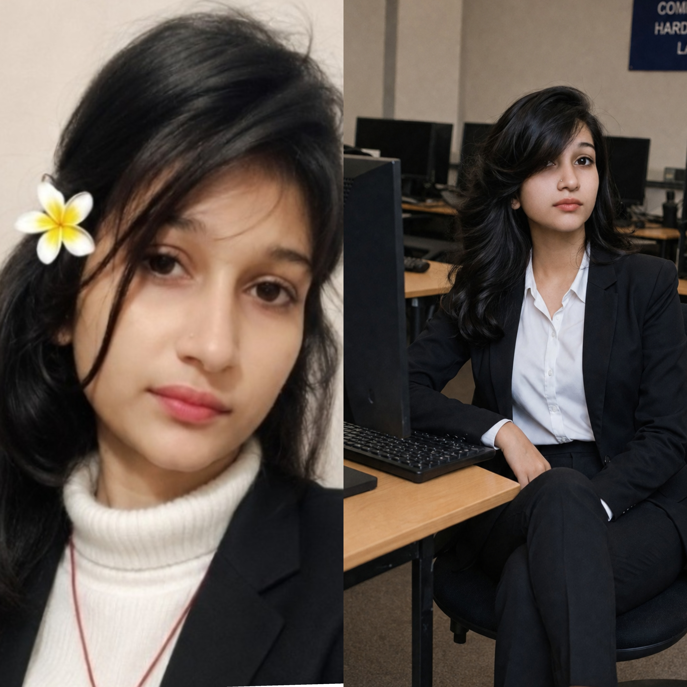

Hello! I'm Kalpana Yadav, a B.Tech Computer Science Engineering student at Azad Institute of Engineering and Technology, Lucknow, affiliated with Dr. A.P.J. Abdul Kalam Technical University (AKTU).
I am a hardworking, dedicated, and quick learner who enjoys learning new technologies. I have a strong interest in Artificial Intelligence, Machine Learning, Web Development, and Programming. I continuously improve my technical and problem-solving skills by building real-world projects.
My career goal is to become a successful AI Engineer and develop innovative solutions that create a positive impact on society.
Course: Computer Science Engineering (CSE)
College: Azad Institute of Engineering and Technology, Lucknow
University: Dr. A.P.J. Abdul Kalam Technical University (AKTU)
Status: Currently Pursuing
Board: Uttar Pradesh Madhyamik Shiksha Parishad (UPMSP)
School: Swami Atmanand I.C. Todarpur, Ghazipur
Percentage: 85%
Board: Central Board of Secondary Education (CBSE)
School: M.N. Memorial Public School, Kotwa Naranpura, Ballia
Percentage: 78%
Created a personal portfolio website using HTML, CSS, and JavaScript.
Created a simple library website using HTML and CSS.
Developing an AI Study Assistant website to help students with learning and study resources.
📞 Phone: +91 9616049305
📧 Email: kalpanabachchan213@gmail.com
💻 GitHub: https://github.com/YourUsername
🔗 LinkedIn: Add Your LinkedIn Profile Link